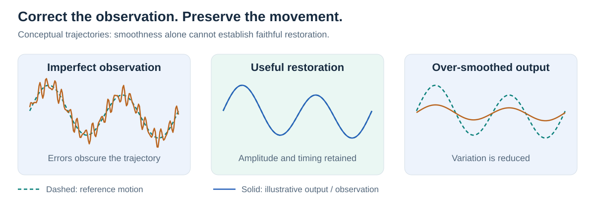
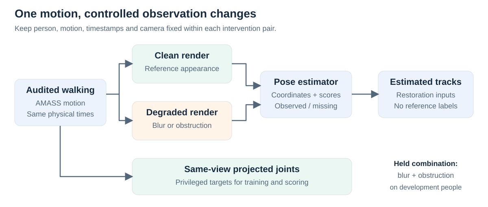
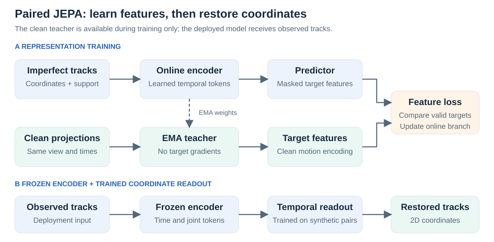
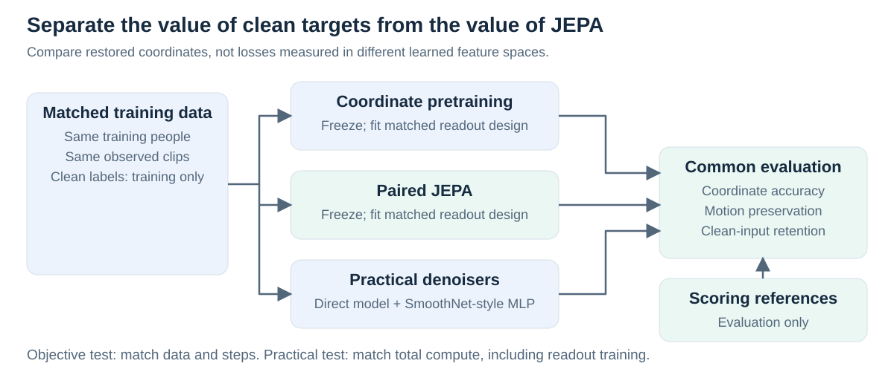
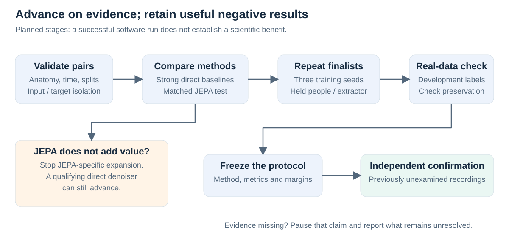

Correct pose errors without erasing gait
Short research proposal · 18 September 2026 · Prospective study; illustrations are conceptual, not results.
Introduction
Blur and obstruction can make a person appear to move differently. Temporal correction may improve estimated joint positions, yet also suppress real changes in timing, amplitude or left–right coordination. We ask: can paired synthetic motion train a temporal skeleton JEPA to restore imperfect pose tracks while preserving movement better than direct denoising?
The initial task is offline 2D sequence restoration: every method receives the same full observed clip. It is a measurement study, with clinical utility requiring separate evidence.

Figure 1. A smoother trajectory can still be wrong. Restoration must retain reference movement amplitude and timing.
Motivation
The original synthetic-training pilot improved over replay in some settings, but its response-based lesson selector did not beat simpler scene selection. The extra retrospective oracle benefit of estimator-specific choices was only 0.0406% on that small development panel. This motivates testing the quality of synthetic supervision before expanding personalization (pilot audit).
Temporal refinement and masked motion learning already have strong precedents: SmoothNet, PoseBERT and S-JEPA. Our proposed contribution is a controlled test of restoration versus motion distortion, including whether latent prediction adds value beyond equally informed coordinate learning.
Methodology
1. Construct matched observations. Audit walking sequences from AMASS. Render identical motion, timestamps and camera geometry under clean, blurred and obstructed conditions; hold blur-plus-obstruction out from fitting. Extract 12 common body joints, native estimator scores and missing-observation flags. Use 64 samples at 25 Hz, spanning 2.52 seconds. Keep projected synthetic targets separate from inference inputs, and audit their anatomical correspondence before interpreting real accuracy.

Figure 2. Change observation conditions while holding movement fixed. All windows and render variants from a person remain grouped across splits.
2. Learn restoration representations. An online temporal encoder processes imperfect tracks. A predictor matches masked features from an exponential-moving-average (EMA) teacher receiving same-view clean projections. This uses privileged synthetic supervision. After pretraining, freeze the encoder and fit a temporal coordinate readout on training pairs. Deployment uses observed tracks only; missing joints receive prediction queries without revealing target validity.

Figure 3. The teacher guides training; it is absent at deployment. The candidate is a local S-JEPA-inspired adaptation, not a new official S-JEPA release.
3. Make the comparison decisive. Compare paired JEPA with same-backbone coordinate pretraining, direct denoising, a SmoothNet-style temporal MLP, unchanged tracks and simple filters. Add initialized-encoder, ordinary masked-JEPA, shuffled-pair and non-temporal controls. Match clean-label access, encoder/readout capacity and tuning opportunities where isolating the objective. Separately compare practical methods at equal total compute, including pretraining and readout fitting.

Figure 4. Ordinary JEPA tests the value of clean targets; matched coordinate pretraining tests the value of latent prediction.
4. Measure accuracy and preservation. The primary endpoint is visible-landmark error normalized by an independent reference-box diagonal, with missing predictions penalized. Companion measurements assess fixed-time displacement, signed ankle separation, amplitude and supported event timing, plus retention on clean inputs. Synthetic hidden-joint scores remain separate from independently annotated real-visible scores. Use people or verified recording groups for paired uncertainty and report training-seed variability separately.
Run one-seed feasibility checks, then three-seed finalist comparisons and independent real development before freezing confirmation. Reserve people, nuisance combinations and an extractor family before selection. Begin dense-annotation feasibility early; sparse labeled frames cannot establish temporal preservation. Proposed 2% coordinate improvement, 5% displacement-error reduction and less than 1% clean degradation are planning targets requiring calibration, not clinical thresholds. The provisional 48 H100-hour development ceiling includes rendering and extraction; annotation effort is budgeted separately.

Figure 5. JEPA failure stops that branch; a useful direct denoiser can still proceed. Missing references leave the affected claim unresolved.
Impact
Faithful restoration could make camera-based movement measurements more dependable under difficult observation conditions. The strongest outcome would be an accuracy gain that preserves independently measured motion and transfers across held people and pose extractors. A direct denoiser outperforming JEPA would also be useful evidence, identifying a simpler route to reliable measurement.
The study will distinguish cleaner-looking output from better observation. It will retain negative results and testable limits rather than infer clinical benefit from synthetic motion. Image-estimator adaptation is a separate supporting branch; personalized teaching and video-feature extensions remain conditional on new evidence.
Study detail: research plan · development protocol · figure and workflow review.